Interfacing and Detecting Auditory Neural Information
Jaime A. Undurraga
2022-01-03
Before starting
This lecture is optimized for Google Chrome and it can be found at
A printable version of this presentation can be obtained at
Introduction
Neural interfaces
Advancements in electronics able to interface with the nervous system is a rapidly advancing. The implications of these technologies reach basic sciences and medical applications.
Furthermore, neural interfaces can provide a direct, electrical bridge between the nervous systems and machines with the potential of transferring information in one or both directions.
Hodgkin and Huxley model
The Hodgkin-Huxley model is the central pillar of modern neuroscience research. It implications range from molecular investigations of the structural basis of ionic channels to the basis of neural interfacing with technology.
Hodgkin and Huxley simulator
Try this simulator. Set random current (IRand) to zero, current injection stop-time (tInjStop) to 50, current amplitude (IDC) to 10 and investigate what is the effect on the neuron’s threshold and spike morphology when changing
- pulse parameters: duration, amplitude
- maximum conductances: sodium (GNaMax), potassium (GKMax), leak (Gm)
- reversal potentials: sodium (ENa), potassium (EK)
Non-invasive Neural Interfaces
Types of neural interfaces
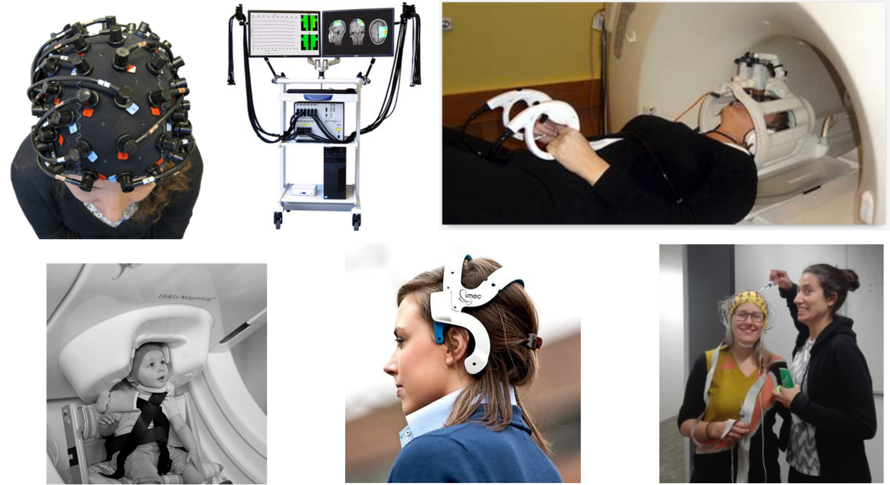
- Functional Near Infrared Spectroscopy (fNIRS)
- Functional magnetic resonance imaging (fMRI)
- Magnetoencephalography (MEG)
- Electroencephalogram (EEG)
Recording
A neural interface builds a bidirectional communication channel between a subject’s nervous system and a man-made device. Non-invasive methods measure the compound extracellular activity of hundreds of thousands neurons.
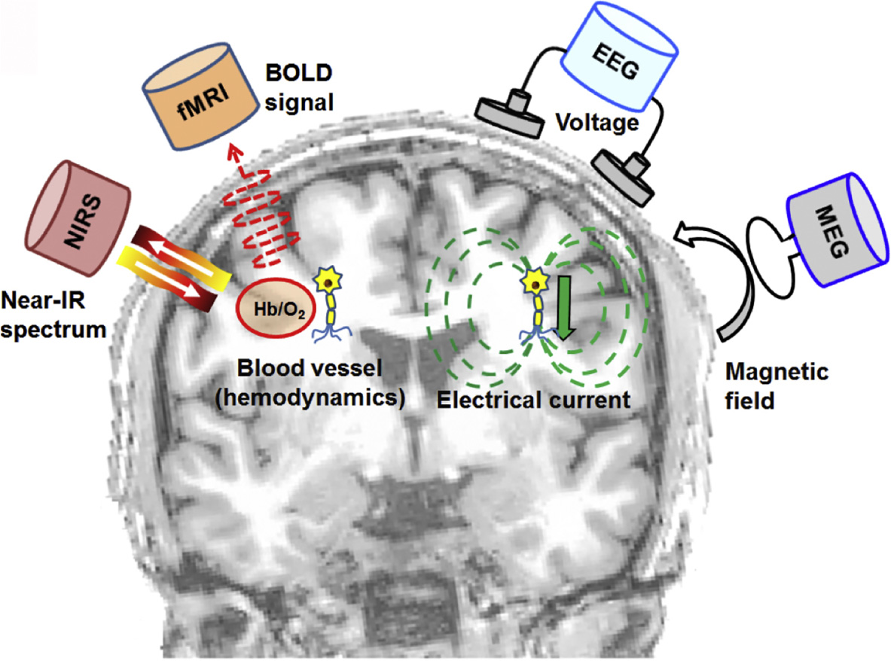
Indirect:
Blood oxygen level dependent response (BOLD): a proxy measure of neural activity - neurovascular link
- Functional magnetic resonance imaging (fMRI)
- Functional Near Infrared Spectroscopy (fNIRS)
Direct:
Electrical currents
- Electroencephalogram (EEG)
- Magnetoencephalography (MEG)
Advantages
- No surgery is required
- Easy to upgrade
Disadvantages
- Weak amplitude
- It may be difficult to achieve good contact between the sensor and the scalp (high impedance)
- Sensitive to endogenous contamination (movements, external noise)
- Portability is an issue
Stimulation
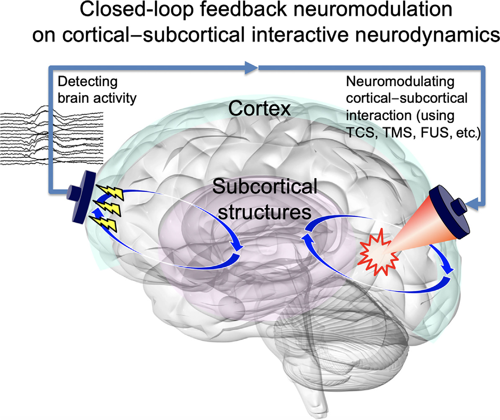
- Transcranial current stimulation (TCS)
- Transcranial magnetic stimulation (TCS)
- Transcranial focused ultrasound (TFS)
- Transcranial photobiomodulation (tPBM)
Advantages
- No surgery required
Disadvantages
- Poor spatial resolution and low control
- Limited time
- Portability is an issue
Is there more?
Invasive Neural Interfaces
Types of neural interfaces
- Non-penetrating electrodes: Electrocorticography (ECoG), Flexible μECoG electrodes (spatial resolution \(\le\) millimetre range)
- Penetrating electrodes
- Optical electrodes
Recording
Advantages
- High spatial and temporal resolution
- Increased signal-to-noise ratio
- Possibility of stimulating and recording neural activity simultaneously
Disadvantages
- Require surgery
- Damage of neural and vascular structures
- Risk that any head trauma may damage the device
- Compatibility issues with other systems (e.g. MRI).
Stimulation
- Biphasic stimulation is the most commonly use pulse shape
- Several pulse shapes
- Several stimulation modes (Monopolar, biopolar, multipolar)
- Several parameters (pulse width, rate, amplitude, polarity)
Encoding of sounds
Monaural Pathway
Monaural Pathway
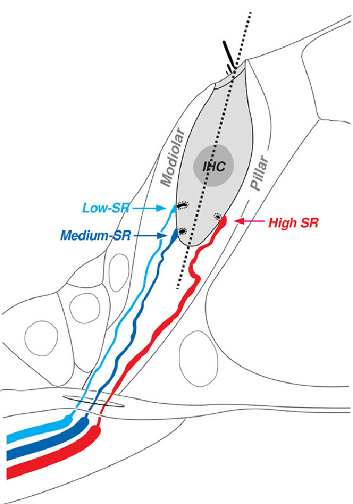
Coding at moderate intensity levels
- 500 Hz tone modulated at 40 Hz at 25 dB SPL
Coding at moderate-to-middle intensity levels
- 500 Hz tone modulated at 40 Hz at 45 dB SPL
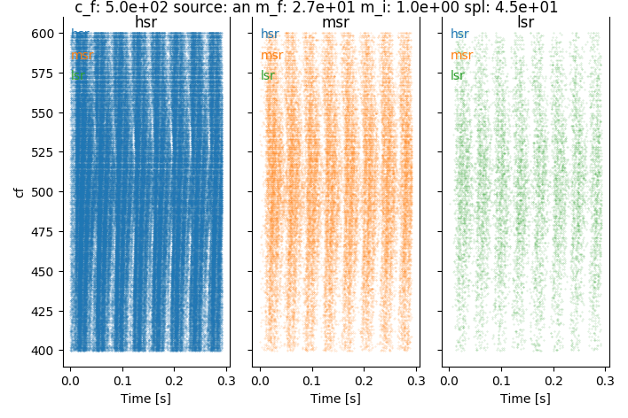
Coding at middle intensity levels
- 500 Hz tone modulated at 40 Hz at 65 dB SPL
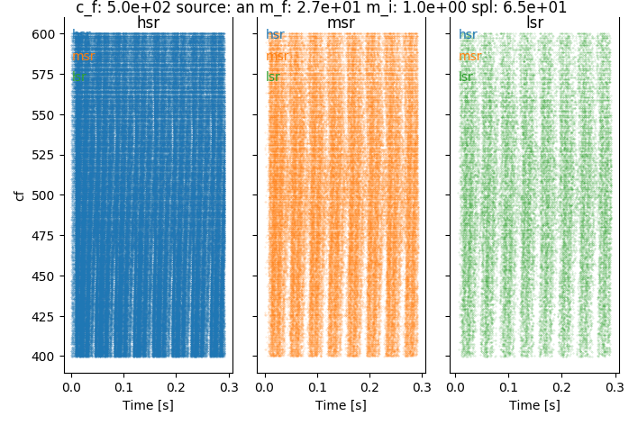 - Cochear synaptopathy reduces the ability to encode sound envelopes, specially at at higher inentensity levels.
Input to one ear

Output at the auditory nerve level

Which features are conveyed by speech sounds?
- Temporal fine structure (TFS)
- Envelope information (ENV)

Objective detection of auditory processing in humans
Electroencephalogram (EEG)
- EEG allows to record electrical activity of the brain by means of electrodes placed along the scalp.
EEG principle
General problem
Auditory evoked potentials
Transient and sustained response
Lab settings


Realtime processing
Auditory brainstem responses (ABRs)
80 Hz auditory steady-state responses (ASSRs)
40 Hz ASSR
Cortical responses to auditory changes
Spectral cues
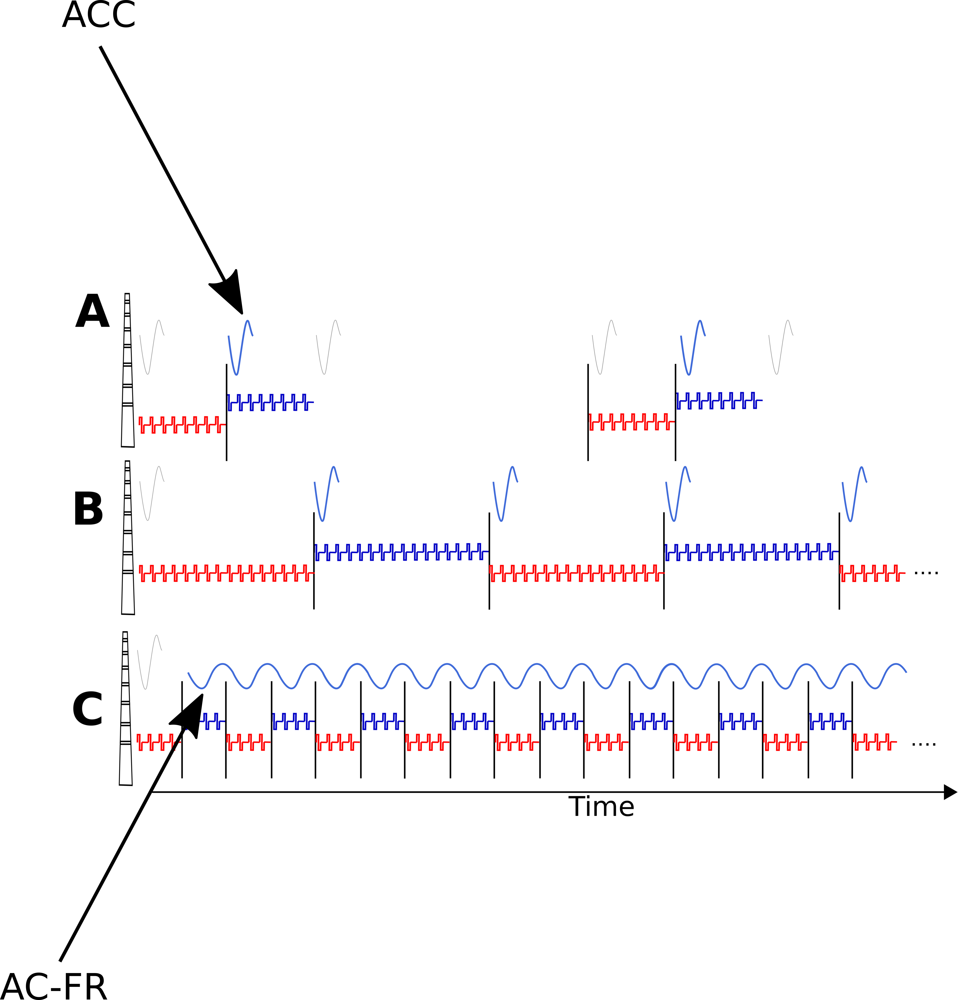
Transient auditory complex change (ACC) responses to speech, electrodes changes, and temporal cues (Kim (2015), Mathew et al. (2018))
Steady-state auditory change following responses (AC-FR) Undurraga et al. (2020)
Binaural cues
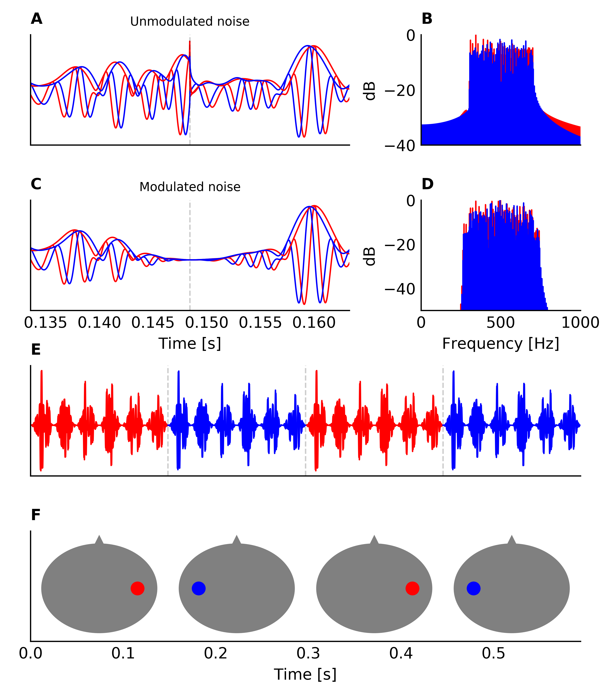
Undurraga et al. (2016)
Cortical responses to binaural auditory changes
Transient ACC responses to binaural cues
AC-FR responses to binaural cues
Objective detection and discrimination of binaural cues
EEG Stimuli
- Amplitude modulated (80 Hz) bandpass noise (100 - 1000 Hz) at 65 dB SPL.
- Interaural time modulations (ITM) presented at a rate of 6.7 Hz
- ITM consisted of: 0/0 (diotic), 0/0.1 ms, 0/0.2 ms, 0/0.4 ms, 0/0.8 ms, and antiphasic condition.
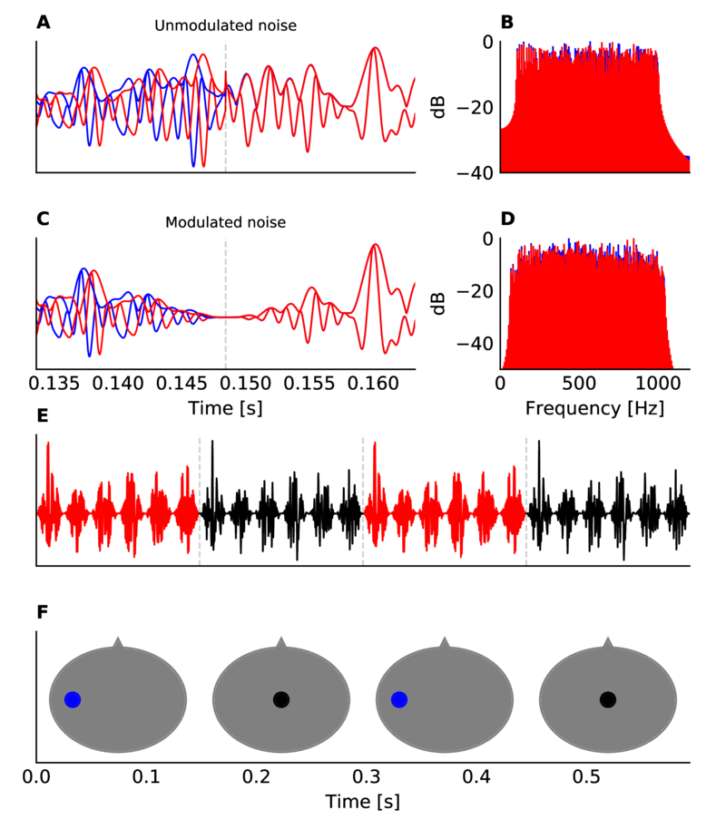
EEG processing
Data referenced to Cz and down-sampled to 1024 samples per second
Poor electrode were automatically detected and removed
Eye blink artifacts were removed using a template matching suppression method (Valderrama et al., 2018)
Data filtered using a FIR Kaiser filter (−65 dB ripple and 1 Hz transition between pass and stop band)
Epochs were sorted and de-noised using spatial filtering (de Cheveigné and Simon, 2008)
Epochs averaged using a weighted averaging method (Don and Elberling, 1994)
Frequency response (FFT of 4255 points at 0.24 Hz resolution) and tested using Hotelling’s T-squared test Picton et al. (1987) and Picton et al. (2003)
Behavioural Measures
Digits in noise test
- Adaptive staircase procedure (2-down/1-up) with variable adaptive step (Leek, 2001; Denys et al. 2019)
- Three randomly chosen digits were presented in background speech shaped noise.
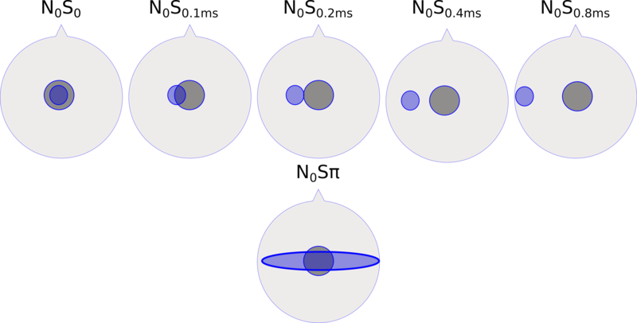
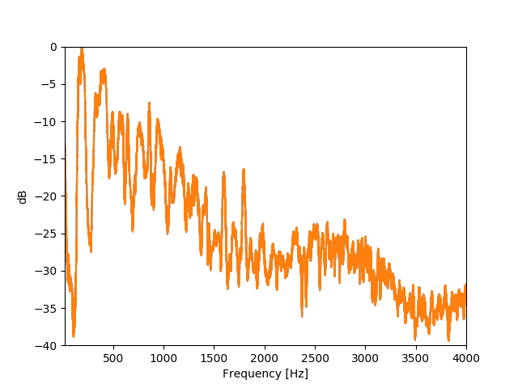
Behavioural methods
Initial step size: 6 dB first two reversals; 3 dB next two reversals, and 2 dB last six reversals.
Noise was presented diotically (i.e. identical signal in both ears) at 65 dB SPL.
Digits were presented using several ITDs: 0, 0.1, 0.2, 0.4, 0.8 ms. In addition, digits were also presented having the opposite polarity in both ears - antiphasic.
3 runs were obtained per ITD (starting SNR at 10 dB and -30 dB).
All were presented in random order.
Speech reception thresholds

EEG responses
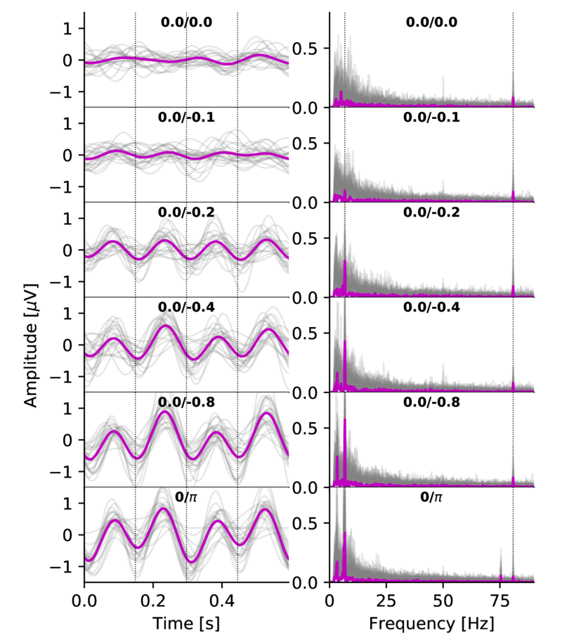 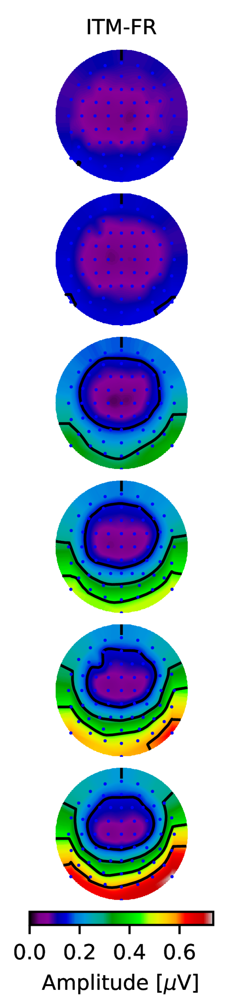
SRT vs EEG
The project
Spectral cues
- Spectral cues are critical for communication
- Information used to distinguish between speech sounds can be represented by specifying peaks in the frequency spectrum
- First (F1) and second (F2) formants are mostly sufficient to identify a vowel
Objective detection of discrimination
- Objective detection of spectral discrimination could be useful for the fitting of hearing devices (Undurraga et al. (2020)).
- Support decision-making for hearing aid fitting and CI referral (for the parents and audiologists) (Mehta et al. (2017)).
Aim
To demonstrate objectively that phoneme-like signals (speech) can be discriminated.
Methods
- Two complex signals with different spectral components alternate periodically.
- Identical energy for the two signals.
- Different amplitude modulations (AMs) imposed to each ear to evoked auditory steady-state responses (ASSRs) to each AM.
- Cortical auditory change complex generated by each transition
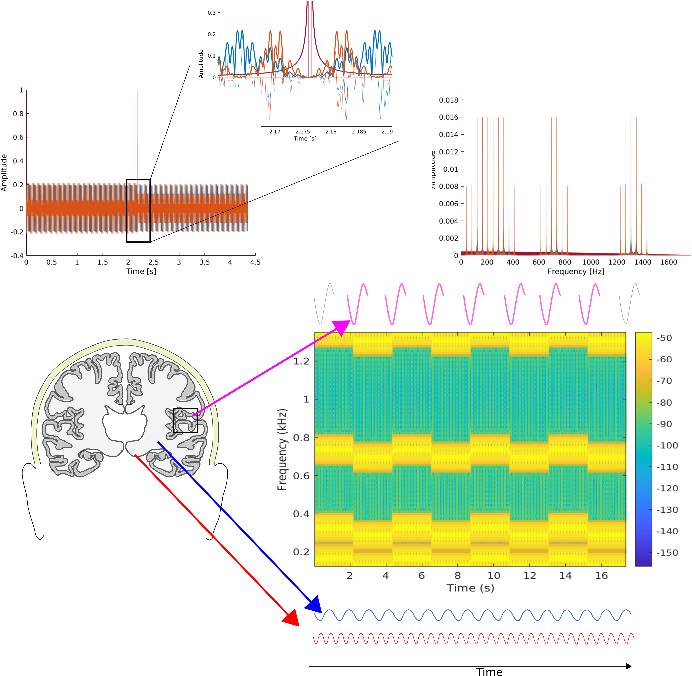
Methods
EEG
- Continuous stimulation
- EEG: 8 channels Biosemi system.
- Stimuli presentation via AEP GUI
- Real-time analysis Biosemi real-time GUI
- Analysis PyEEG-Python
Stimuli
Consider different aspects
- Intensity
- Spectral components
- Modulation Frequencies
- Artefacts
- Optimal parameters
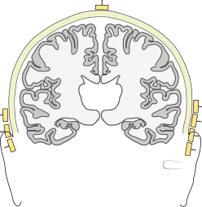